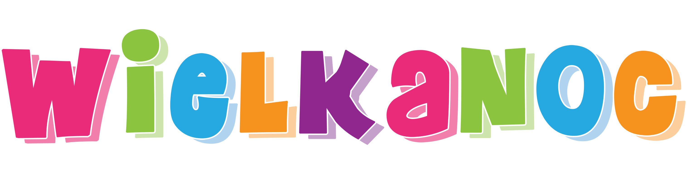
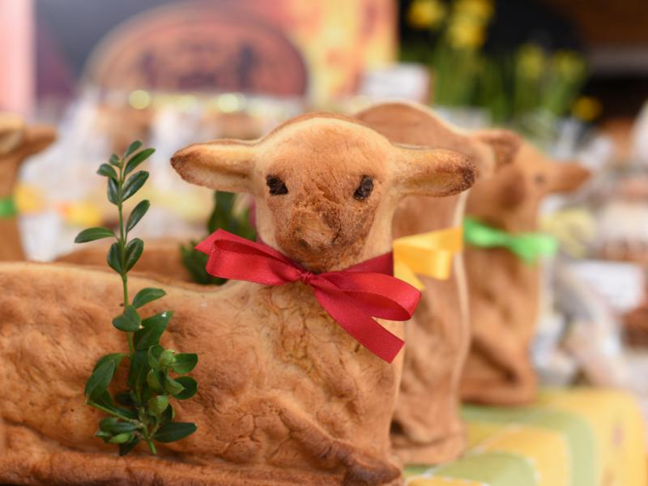
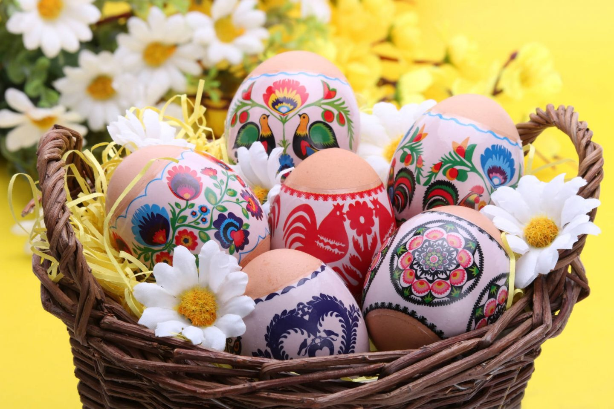

W tym roku...
Wielkanoc obchodzimy 9 kwietnia.
Cóż to za święto?
Najstarsze i najważniejsze święto chrześcijańskie celebrujące misterium paschalne Jezusa Chrystusa:
jego mękę, śmierć i zmartwychwstanie, obchodzone przez Kościoły chrześcijańskie zachowujące
Nicejskie wyznanie wiary (325 r.). Kulminacyjny moment cyklu paschalnego. Rozwinęło się od święta
obchodzonego w duchu i prawdzie (J 4,24) w ramach żydowskich obrzędów Pesach. Następnie, po oddzieleniu
Kościoła od Synagogi, stało się prostym dorocznym świętem poprzedzonym jednym lub kilkoma dniami postu,
sprawowanym jako całonocne czuwanie (Wigilia Paschalna), w czasie którego opowiadano historię zbawienia
zwieńczoną w wydarzeniach paschalnych z udziałem Jezusa Chrystusa i składano eucharystyczną ofiarę prawdziwego
Baranka (por. Orędzie paschalne) – Syna Bożego. A ostatecznie przybrało formę trzydniowego obchodu tzw.
Triduum Paschalnego, poprzedzonego czterdziestodniowym okresem przygotowania (wielki post) i kontynuowanego
radosną celebracją pięćdziesięciu dni okresu wielkanocnego aż do święta Zesłania Ducha Świętego.
Obrzędy Wigilii Paschalnej, Wielkiej Nocy par excellence, stanowiącej serce Niedzieli Zmartwychwstania Pańskiego,
jak ukazują np. przepisy obrządku rzymskiego, rozpoczynają się w sobotę po zapadnięciu zmroku.
„Nie wolno ich rozpocząć, zanim nie zapadnie noc, a należy je zakończyć przed świtem”.
Niedziela Zmartwychwstania Pańskiego jest wspominana w ciągu roku liturgicznego poprzez świętowanie niedzieli.
Jak się wyraził Jan Paweł II w liście Dies Domini, niedziela jest „paschą tygodnia, podczas której świętujemy
zwycięstwo Chrystusa nad grzechem i śmiercią, dopełnienie w Nim dzieła pierwszego stworzenia i początek «nowego
stworzenia» (por. 2 Kor 5, 17)”
Symbole Wielkanocy
Jest symbolem
wiosny i budzenia się do życia

Jest symbolem
odkupienia grzeszników i przezwyciężenia zła

Są symbolem
triumfu życia nad śmiercią i początku nowego życia
Piosenka wielkanocna
Malwina Jarosz
2023